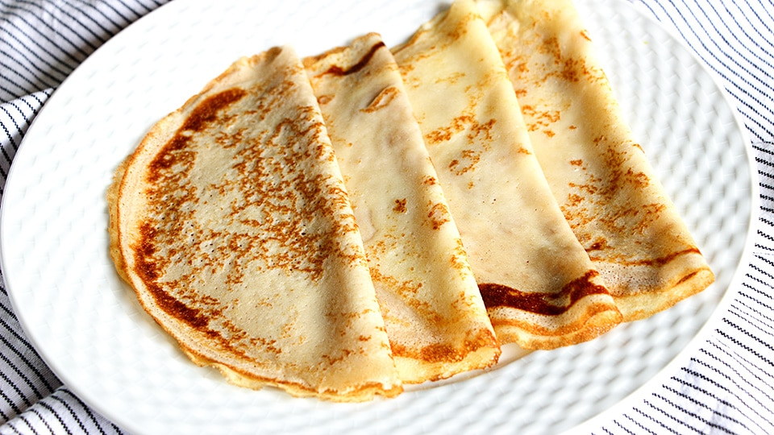
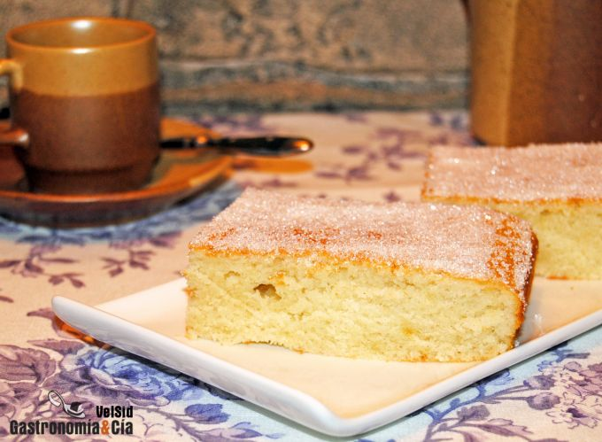
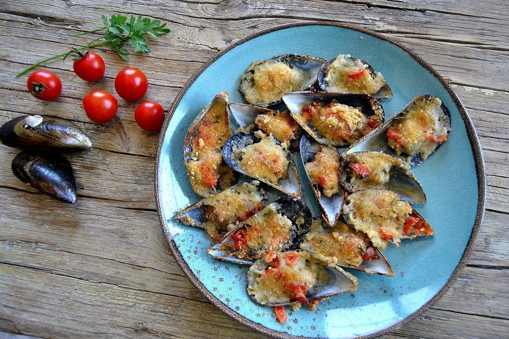

Cómo hacer crêpes o creps caseros. Receta fácil y rápida.
Las crêpes, creps o crepas son originarias de la región de Bretaña, al oeste de Francia. En esta región
francesa encontramos dos platos parecidos: las crêpes elaboradas con trigo candeal y generalmente
reservadas a los dulces y las galettes elaboradas con trigo sarraceno o alforfón, que se suelen rellenar
con ingredientes salados.Ver más

Cómo hacer una coca de llanda o boba. Postre tradicional paso a paso.
La coca de llanda (coca de lata en valenciano) también conocida como coca boba, coca de medida o coca mal
feta (coca mal hecha) es un bizcocho muy típico en la Comunidad Valenciana y que durante generaciones se
ha preparado en prácticamente todos los hogares y en todas las panaderías de los pueblos. Se le llama
coca de llanda porque suele prepararse en una bandeja alargada metálica y no en un molde típico para
bizcocho.Ver más

Mejillones gratinados con velouté de Albariño. Receta navideña paso a paso.
Los mejillones son uno de los productos del mar con una mejor calidad/precio. Siempre deliciosos,
sabrosos, saludables y sacamos lo mejor de ellos con una mínima preparación en cocina. Galicia es el
mayor productor mundial de este molusco, llegando al 95% del mejillón que se consume en España, gracias
a su producción en bateas en las Rías gallegas.Ver más